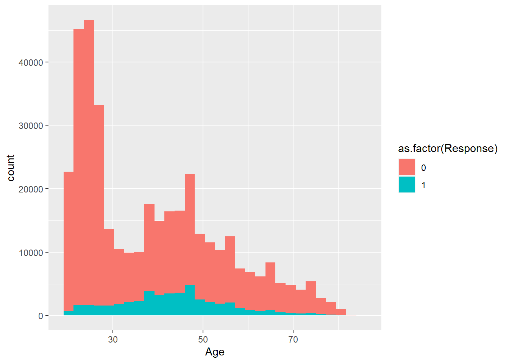
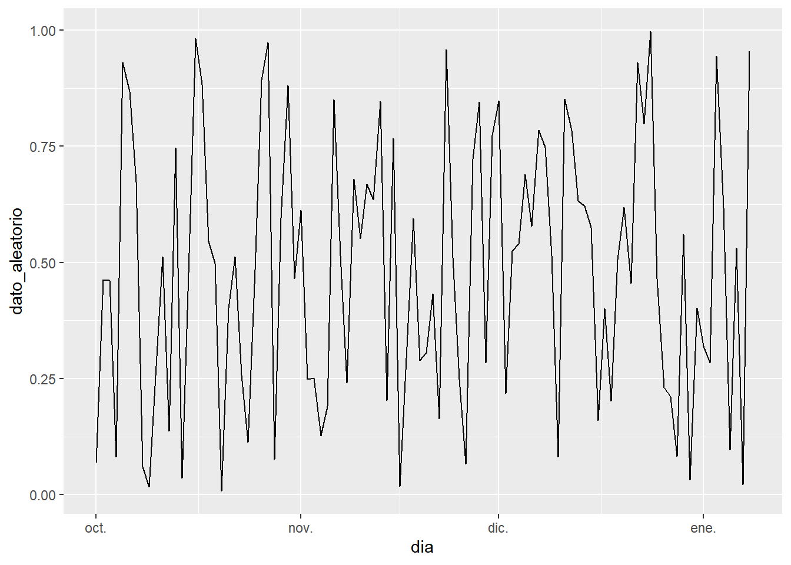
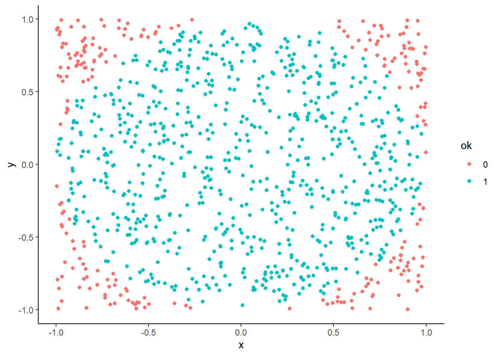
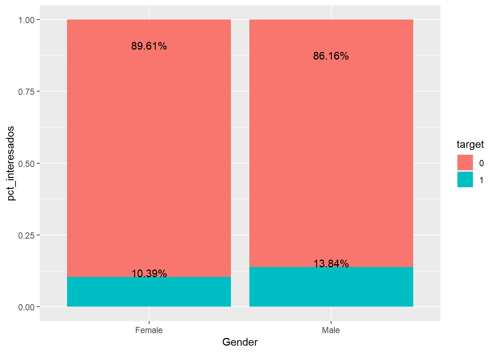
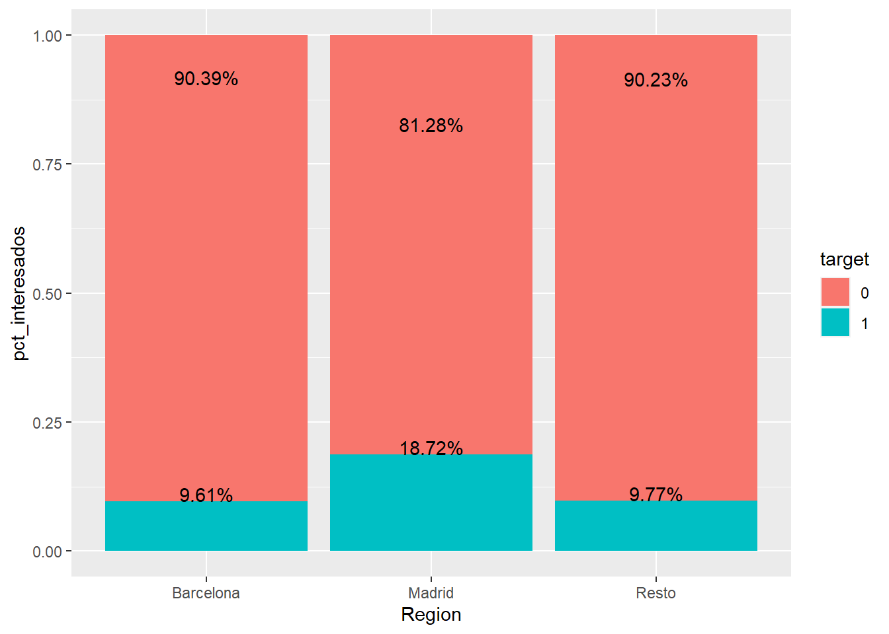
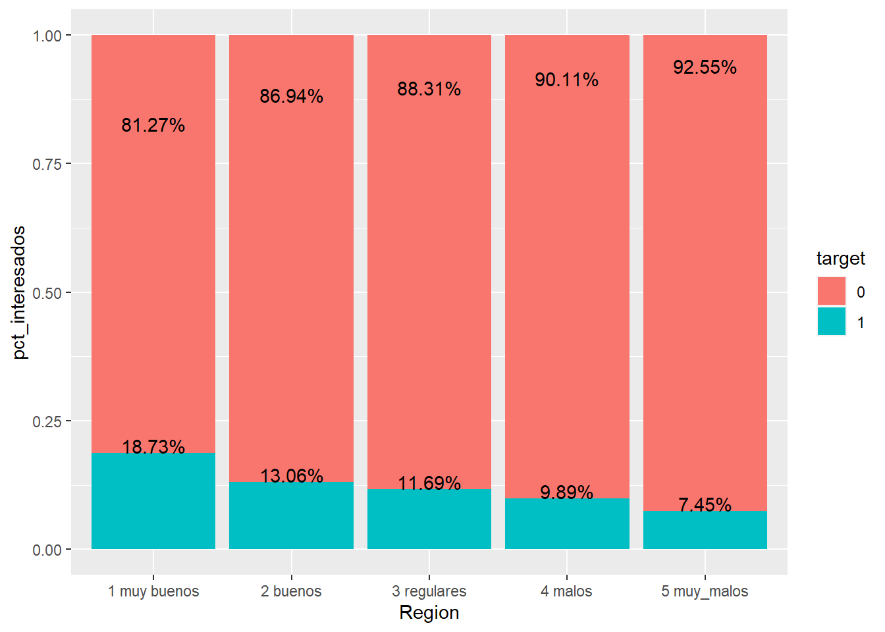
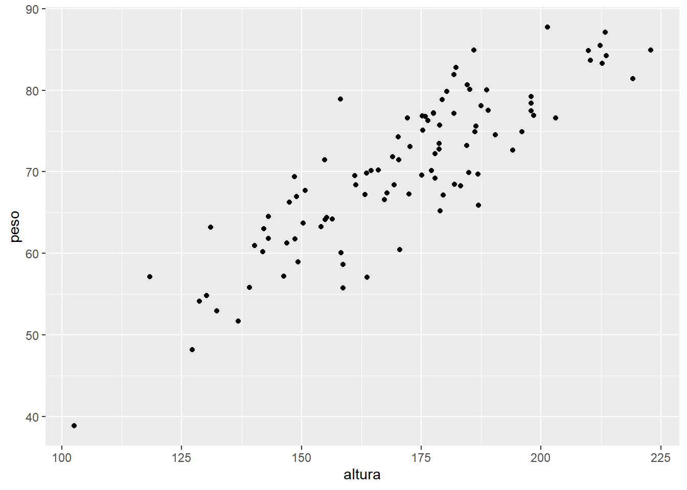
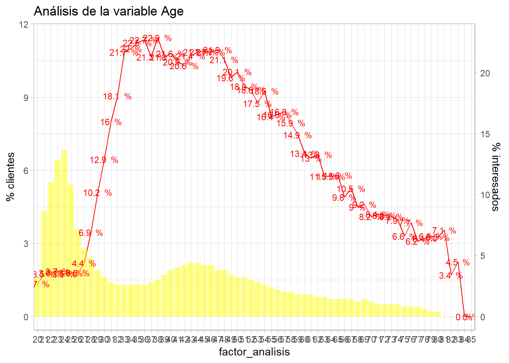
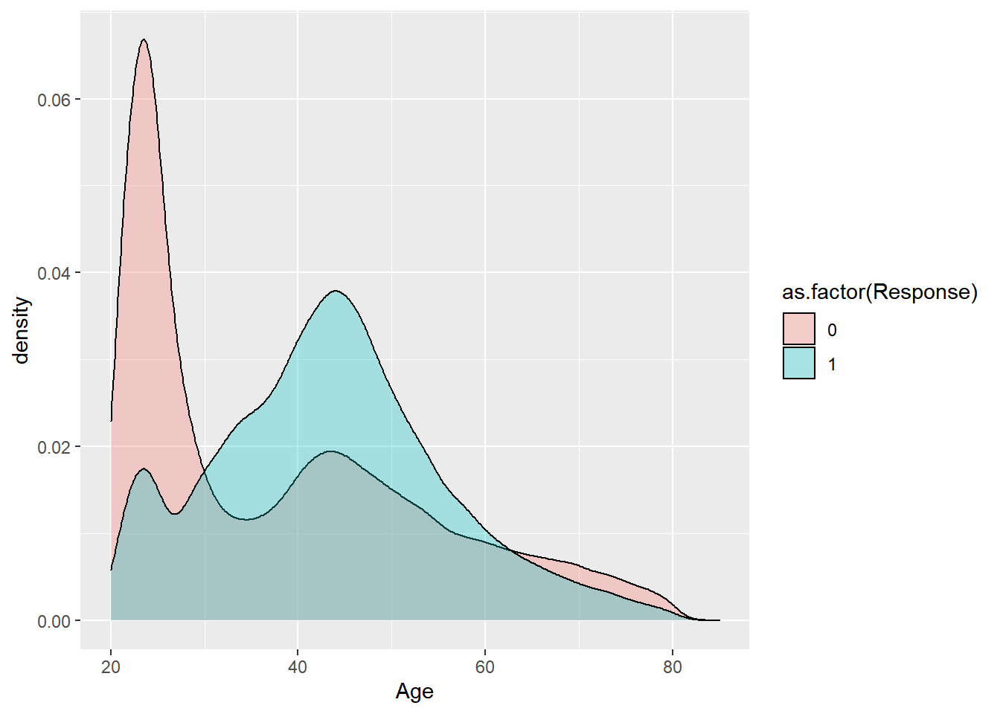

Capítulo 11 Análisis bivariable
De nuevo se retoma el ejemplo que está sirviendo de hilo conductor para este ensayo, la campaña de marketing de venta cruzada en el sector asegurador que está disponible en Kaggle. Una aseguradora española que opera en múltiples ramos quiere ofrecer seguro de automóviles a sus clientes del ramo de salud. Para ello se realizó un cuestionario a los clientes de forma que se marcó quienes de ellos estarían interesados en el producto de automóviles y quienes no. Se identificaron posibles tareas:
- Describir la cartera de clientes.
- Identificar que características de nuestros clientes pueden ser eficaces a la hora de crear una campaña comercial.
- Sugerir unas reglas para la elaboración de la campaña.
library(tidyverse)
library(formattable)
train <- read.csv("./data/train.csv")
formattable(head(train,5))| id | Gender | Age | Driving_License | Region_Code | Previously_Insured | Vehicle_Age | Vehicle_Damage | Annual_Premium | Policy_Sales_Channel | Vintage | Response |
|---|---|---|---|---|---|---|---|---|---|---|---|
| 1 | Male | 44 | 1 | 28 | 0 |
2 Years |
Yes | 40454 | 26 | 217 | 1 |
| 2 | Male | 76 | 1 | 3 | 0 | 1-2 Year | No | 33536 | 26 | 183 | 0 |
| 3 | Male | 47 | 1 | 28 | 0 |
2 Years |
Yes | 38294 | 26 | 27 | 1 |
| 4 | Male | 21 | 1 | 11 | 1 | < 1 Year | No | 28619 | 152 | 203 | 0 |
| 5 | Female | 29 | 1 | 41 | 1 | < 1 Year | No | 27496 | 152 | 39 | 0 |
Hasta el momento se ha descrito el conjunto de datos, se han determinado que roles juegan las variables dentro de ese conjunto de datos donde se estableció que la variable más relevante es Response ya que juega el rol de variable target. Esta variable toma valores 0 - no interesa 1 - interesa el producto, es decir, se distribuye según una binomial con parámetros n = 381.000 clientes y p = 0.1223 interesados, conocer la distribución ayuda a afrontar el análisis.
formattable(train %>% group_by(Response) %>%
summarise(clientes = n(),pct_clientes=n()/nrow(train)))| Response | clientes | pct_clientes |
|---|---|---|
| 0 | 334399 | 0.8774366 |
| 1 | 46710 | 0.1225634 |
En este capítulo el científico de datos comienza a estudiar la relación entre dos variables que pueden ser cuantitativas o factores. Esta categorización da lugar a 3 tipos de relaciones entre dos variables:
- Variable numérica frente a variable numérica
- Variable numérica frente a factor
- Factor frente a factor
11.1 Variable numérica frente a variable numérica
El inicio de la relación entre dos variables es la correlación. Esta medida bivariable pretende medir como la variación de una variable cuantitativa influye en otra variable cuantitativa. La cuestión fundamental es, a medida que se incrementa x, ¿qué sucede con y? Por ejemplo, a medida que una persona crece en altura, ¿cómo se incrementa su peso? Para ilustrar se realiza una simulación y un gráfico de dispersión para estudiar como se distribuyen los pares de variables (peso, altura)
personas <- 100
altura <- rnorm(personas, 170, 20)
peso <- altura/2.85 + rnorm(personas, 10, 5)
data.frame(altura=altura, peso=peso) %>% ggplot(aes(x = altura, y = peso)) +
geom_point()
Aunque sean datos simulados es evidente, por como se ha hecho la simulación, que a medida que aumenta la altura aumenta el peso. Hay una medida estadística para describir esta situación, el coeficiente de correlación que en R se calcula mediante la función cor.
cor(peso, altura)## [1] 0.8651548Esta medida de 0.87 indica que peso y altura se relacionan positivamente, a medida que aumenta uno aumenta el otro pero no es una medida de graduación, sólo mide la fuerza de esa relación. El coeficiente de correlación es un valor que toma valores entre -1 y 1 donde -1 significa total correlación negativa (aumenta una implica que disminuye la otra variable), 0 significa que no existe ningún tipo de correlación y 1 la correlación positiva (aumenta una aumenta otra variable).
Simulando y representando las distintas formas de correlación se tiene:
library(gridExtra)
# Correlación positiva
observaciones <- 1000
x <- rnorm(observaciones, 0, 1)
y <- x/5 + rnorm(observaciones, 0, 0.1)
p1 <- data.frame(x,y) %>% ggplot(aes(x , y)) +
geom_point() + ggtitle(paste0("Correlación: ", round(cor(x,y),3)))
# Correlación negativa
x <- rnorm(observaciones, 0, 5)
y <- rpois(observaciones, 3) - x
p2 <- data.frame(x,y) %>% ggplot(aes(x , y)) +
geom_point() + ggtitle(paste0("Correlación: ", round(cor(x,y),3)))
# Sin correlación
x <- rnorm(observaciones, 0, 5)
y <- runif(observaciones)
p3 <- data.frame(x,y) %>% ggplot(aes(x , y)) +
geom_point() + ggtitle(paste0("Correlación: ", round(cor(x,y),3)))
# Aparentemente sin correlación
x <- rnorm(observaciones, 0, 1)
y <- x^2 + runif(observaciones, -1,1 )
p4 <- data.frame(x,y) %>% ggplot(aes(x , y)) +
geom_point() + ggtitle(paste0("Correlación: ", round(cor(x,y),3)))
grid.arrange(p1,p2,p3,p4)
Se simulan 4 tipos distintos de correlación, correlación positiva, negativa (vistas con anterioridad); en el tercer caso no hay correlación, cuando ésta no existe los gráficos de dispersión generan polígonos como cuadrados, rectángulos o circunferencias ya que la disposición de los pares de puntos se debe a un comportamiento azaroso (una variable no afecta a otra). Sin embargo, se ilustra otro tipo de situación, el cuarto gráfico, donde es evidente que hay una relación entre las variables pero ésta no es lineal y por ello el coeficiente de correlación no es suficiente para identificar esta situación.
En el ejemplo de trabajo que hace de hilo conductor del ensayo no se realiza el análisis de correlaciones puesto que la variable principal para realizar un análisis bivariable es la variable target, la variable Response, que toma valores 0 si el cliente no está interesado en el seguro de automóviles y 1 si muestra interés en el producto. Por este motivo será más conveniente un análisis bivariable con un factor.
11.2 Factores frente a variables numéricas
Una de las variables es un factor, cada nivel de ese factor representa una categoría, ya no es un punto. Será necesario estudiar como son los valores que toma la variable numérica para cada nivel del factor. En el capítulo 7, en la descripción gráfica de datos se estudiaban los posibles valores que toma una variable mediante histogramas, gráficos de densidades y boxplot. En este caso se puede hacer uno de esos análisis gráficos para cada nivel del factor y así comparar ambas variables.
En el ejemplo de trabajo se tiene una variable target que toma valores 0 y 1, a continuación se estudia esa variable objetivo Response frente a la variable Age que indica la edad de los asegurados encuestados.
train %>% ggplot(aes(x=Age, group=as.factor(Response), fill=as.factor(Response))) +
geom_histogram()
Es necesario especificar que la variable es un factor, en este caso Response es numérica y a efectos prácticos se sigue manteniendo como numérica. Si no se especifica que es un factor se tendría la siguiente situación:
train %>% ggplot(aes(x=Age, group=Response, fill=Response)) +
geom_histogram()
No tiene sentido realizar una escala continua de un factor, es un problema habitual cuando se trabaja con factores en R. En cualquier caso, emplear un histograma de este tipo no sirve porque se están contando registros y si una de las categorías del factor tiene menos observaciones no se podrá comparar su comportamiento. Pero se dispone de los gráficos de densidad que permiten estudiar mediante una función continua la distribución de los valores.
train %>% ggplot(aes(x=Age, group=as.factor(Response), fill=as.factor(Response))) +
geom_density()
Se aprecian comportamientos distintos para la edad en la respuesta pero se sugiere jugar con la transparencia de los gráficos para conocer mejor las distribuciones, simplemente se añade el parámetro alpha.
train %>% ggplot(aes(x=Age, group=as.factor(Response), fill=as.factor(Response))) +
geom_density(alpha = 0.3)
Hay claramente dos distribuciones en función de la variable respuesta, estas distribuciones no son conocidas y tampoco es relevante porque es la distribución de la variable respuesta la que tiene importancia. La variable respuesta toma dos posibles valores y suponiendo cada cliente como independiente se tiene una distribución binomial como se ha indicado con anterioridad. Si el objetivo del ejercicio es establecer que características hacen que los clientes sean más propensos a adquirir un seguro de automóviles parece que la edad es una de esas características. A la vista del gráfico es más evidente que a mayor edad mayor interés, mayor probabilidad de adquirir un seguro de automóviles en la compañía. Cuando se tiene una variable respuesta es necesario estudiar esta variable frente a las variables que se consideren relevantes en su comportamiento, frente a todas las variables input. Por ejemplo, se repite el ejercicio contra Vintage que hace referencia a la antigüedad como cliente.
train %>% ggplot(aes(x=Vintage, group=as.factor(Response), fill=as.factor(Response))) +
geom_density(alpha = 0.3)
En este caso la forma de la variable tanto para los que afirman estar interesados en el seguro de automóviles como para aquellos que no lo están es prácticamente la misma. De forma gráfica no parece que la antigüedad como cliente esté afectando a la variable respuesta. Para este tipo de análisis también se puede emplear el boxplot.
p1 <- train %>% ggplot(aes(x=Age, group=as.factor(Response), fill=as.factor(Response))) +
geom_boxplot(alpha = 0.3)
p2 <- train %>% ggplot(aes(x=Vintage, group=as.factor(Response), fill=as.factor(Response))) +
geom_boxplot(alpha = 0.3)
grid.arrange(p1,p2)
Se aprecia como edades mayores muestran mayor propensión y como la antigüedad no está afectando al interés por el seguro de automóviles. Es importante reseñar que cualquier de los dos gráficos ofrece la forma, la distribución de las variables para cada nivel de la variable respuesta. Es necesario reseñar que en ningún momento aparece el número de observaciones ni se dispone de ningún mecanismo para identificar el peso que tiene cada grupo en estudio.
Como se ha indicado este análisis es necesario llevarlo a cabo con todas las variables input pero no es posible emplearlo cuando se comparan factores frente a factores, en esa situación es necesario emplear otro análisis gráfico.
11.3 Factores frente a factores
En el capítulo 7 los factores se estudiaban mediante gráficos de barras y en el análisis bivariable se puede seguir la misma tónica pero será necesario apilar en la barra los niveles del otro factor en estudio para poder comparar. Se recomienda apilar el factor que haga de variable respuesta.
train %>% group_by(Gender, target=as.factor(Response)) %>% summarise(clientes=n()) %>%
ggplot(aes(x=Gender, y=clientes, fill=target)) +
geom_bar(stat="identity")
Es un gráfico apilado con un problema, no se puede determinar si el target es mayor para un sexo u otro, es necesario relativizar, es necesario estudiar los porcentajes de respuesta por nivel del factor input para no sacar conclusiones erróneas.
train %>% group_by(Gender, target=as.factor(Response)) %>% summarise(clientes=n()) %>%
transmute(target, pct_interesados = clientes/sum(clientes)) %>%
ggplot(aes(x=Gender, y=pct_interesados, fill=target)) +
geom_bar(stat="identity") +
geom_text(aes(label=paste0(round(pct_interesados,4)*100,'%')), vjust=0)
Al emplear % para comparar se pierde el número de observaciones pero facilita la comparación. Se van añadiendo posibilidades gráficas a ggplot, en este caso se incluyen los valores porcentuales mediante geom_text el ejemplo de uso no se complica mucho el código. También tiene interés en el anterior código el uso de transmute que permite crear porcentajes de grupos como una nueva variable a partir de summarise:
formattable(train %>% group_by(Gender, target=as.factor(Response)) %>%
summarise(clientes=n()) %>%
transmute(target, pct_interesados = round(clientes*100/sum(clientes),2)))| Gender | target | pct_interesados |
|---|---|---|
| Female | 0 | 89.61 |
| Female | 1 | 10.39 |
| Male | 0 | 86.16 |
| Male | 1 | 13.84 |
En el ejemplo de trabajo parece que los hombres encuestados muestran mayor interés por el producto de automóviles. Este mismo análisis se debe replicar para todos los factores input presentes en el conjunto de datos. Por ejemplo, la variable Region_Code
train %>% group_by(Region = as.factor(Region_Code), target=as.factor(Response)) %>%
summarise(clientes=n()) %>%
transmute(target, pct_interesados = clientes/sum(clientes)) %>%
ggplot(aes(x=Region, y=pct_interesados, fill=target)) +
geom_bar(stat="identity") +
geom_text(aes(label=paste0(round(pct_interesados,4)*100,'%')), vjust=0)
En este gráfico aparecen dos problemas que el científico de datos tiene que tener en cuenta cuando trabaje con factores.
- El factor tiene demasiados niveles
- El factor puede tener pocas observaciones y se están sacando conclusiones con pocos registros
Al primer problema ya se hizo mención al inicio del ensayo, se sugiere realizar una agrupación de niveles para facilitar su interpretación. Además, es posible que se obtengan conclusiones sobre niveles del factor que puedan llevar al error debido a la escasa prevalencia. La prevalencia tiene diversas definiciones pero en este caso se define como el divisor en el cálculo del porcentaje dentro del nivel del factor.
\[pct-interesados_{nivel-i}= \frac {interesados_{nivel-i}}{observaciones_{nivel-i}} = \frac {interesados_{nivel-i}}{prevalencia_{nivel-i}}\]
Es relevante porque es sentido común no dar el mismo valor al % de la variable respuesta en una provincia donde se tiene una cartera de 80.000 clientes que en una provincia donde se tienen 80 clientes. El % de clientes interesados en un caso se calcula con un denominador de 80.000 y en otro caso con un denominador de 80 y en los gráficos presentados hasta el momento no es posible estudiar correctamente la prevalencia.
Cuando el científico de datos se encuentre situaciones de baja prevalencia o alto número de niveles de un factor ha de pensar una estrategia para abordar el problema. Siempre se debe priorizar la realización de “agrupaciones con sentido de negocio”. En este caso, si se conoce la división territorial, agrupar por comunidades autónomas, por zonas, territoriales o separar las provincias más relevantes frente al resto. Por ejemplo:
train <- train %>% mutate(fr_region = case_when(
Region_Code == 8 ~ 'Barcelona',
Region_Code == 28 ~ 'Madrid',
TRUE ~ 'Resto'))
train %>% group_by(Region = as.factor(fr_region), target=as.factor(Response)) %>% summarise(clientes=n()) %>%
transmute(target, pct_interesados = clientes/sum(clientes)) %>%
ggplot(aes(x=Region, y=pct_interesados, fill=target)) +
geom_bar(stat="identity") +
geom_text(aes(label=paste0(round(pct_interesados,4)*100,'%')), vjust=0)
Se sugiere que aquellas variables del conjunto de datos que estén analizadas o clasificadas empiecen por un prefijo o se las pueda distinguir de algún modo dentro del tablón de datos, en este caso y a lo largo de todo el trabajo, se emplea el prefijo fr_ para indicar factor reclasificado. Esto facilitará la automatización de análisis y los procesos de modelización como se verá con posterioridad.
Parece más alto el interés en Madrid, sin embargo, el % de interesados en Barcelona y el resto de España es similar. No es una agrupación convincente pero puede interesar a un equipo de negocio. Otro mecanismo de unión de factores puede basarse en la propia variable respuesta, que sea ese % el que agrupe la variable. A continuación se plantea una agrupación en buenos, regulares y malos, agrupación de niveles de un factor simplista basada en el % de respuesta.
res <- train %>% group_by(Region_Code) %>%
summarise(clientes=n(), pct_interesados = round(sum(Response)*100/n(),2)) %>%
arrange(desc(pct_interesados)) %>%
mutate(pct_agregado_clientes = cumsum(clientes)/nrow(train),
pct_anterior_agregado=lag(pct_agregado_clientes, default = 0))
formattable(res, digits=2, list(pct_interesados=color_bar('grey')))| Region_Code | clientes | pct_interesados | pct_agregado_clientes | pct_anterior_agregado |
|---|---|---|---|---|
| 38 | 2026 | 19.2 | 0.0053 | 0.0000 |
| 28 | 106415 | 18.7 | 0.2845 | 0.0053 |
| 19 | 1535 | 16.3 | 0.2886 | 0.2845 |
| 4 | 1801 | 15.8 | 0.2933 | 0.2886 |
| 23 | 1960 | 15.3 | 0.2984 | 0.2933 |
| 51 | 183 | 15.3 | 0.2989 | 0.2984 |
| 24 | 2415 | 14.2 | 0.3053 | 0.2989 |
| 7 | 3279 | 13.2 | 0.3139 | 0.3053 |
| 18 | 5153 | 13.2 | 0.3274 | 0.3139 |
| 3 | 9251 | 12.8 | 0.3517 | 0.3274 |
| 35 | 6942 | 12.5 | 0.3699 | 0.3517 |
| 39 | 4644 | 12.4 | 0.3821 | 0.3699 |
| 52 | 267 | 12.4 | 0.3828 | 0.3821 |
| 29 | 11065 | 12.3 | 0.4118 | 0.3828 |
| 41 | 18263 | 12.2 | 0.4597 | 0.4118 |
| 40 | 1295 | 11.8 | 0.4631 | 0.4597 |
| 5 | 1279 | 11.6 | 0.4665 | 0.4631 |
| 20 | 1935 | 11.5 | 0.4715 | 0.4665 |
| 11 | 9232 | 11.3 | 0.4958 | 0.4715 |
| 45 | 5605 | 11.0 | 0.5105 | 0.4958 |
| 1 | 1008 | 10.8 | 0.5131 | 0.5105 |
| 46 | 19749 | 10.3 | 0.5649 | 0.5131 |
| 48 | 4681 | 10.2 | 0.5772 | 0.5649 |
| 31 | 1960 | 10.1 | 0.5824 | 0.5772 |
| 33 | 7654 | 9.9 | 0.6024 | 0.5824 |
| 12 | 3198 | 9.8 | 0.6108 | 0.6024 |
| 8 | 33877 | 9.6 | 0.6997 | 0.6108 |
| 43 | 2639 | 9.2 | 0.7067 | 0.6997 |
| 13 | 4036 | 9.0 | 0.7172 | 0.7067 |
| 14 | 4678 | 9.0 | 0.7295 | 0.7172 |
| 47 | 7436 | 8.8 | 0.7490 | 0.7295 |
| 0 | 2021 | 8.6 | 0.7543 | 0.7490 |
| 32 | 2787 | 8.6 | 0.7616 | 0.7543 |
| 9 | 3101 | 8.2 | 0.7698 | 0.7616 |
| 36 | 8797 | 8.0 | 0.7929 | 0.7698 |
| 37 | 5501 | 7.9 | 0.8073 | 0.7929 |
| 34 | 1664 | 7.6 | 0.8117 | 0.8073 |
| 49 | 1832 | 7.5 | 0.8165 | 0.8117 |
| 42 | 591 | 7.4 | 0.8180 | 0.8165 |
| 27 | 2823 | 7.4 | 0.8254 | 0.8180 |
| 30 | 12191 | 7.4 | 0.8574 | 0.8254 |
| 26 | 2587 | 7.2 | 0.8642 | 0.8574 |
| 15 | 13308 | 7.2 | 0.8991 | 0.8642 |
| 2 | 4038 | 7.1 | 0.9097 | 0.8991 |
| 21 | 4266 | 7.1 | 0.9209 | 0.9097 |
| 17 | 2617 | 7.0 | 0.9278 | 0.9209 |
| 6 | 6280 | 7.0 | 0.9443 | 0.9278 |
| 16 | 2007 | 6.7 | 0.9495 | 0.9443 |
| 22 | 1309 | 6.3 | 0.9530 | 0.9495 |
| 50 | 10243 | 6.3 | 0.9798 | 0.9530 |
| 10 | 4374 | 6.0 | 0.9913 | 0.9798 |
| 25 | 2503 | 4.3 | 0.9979 | 0.9913 |
| 44 | 808 | 4.1 | 1.0000 | 0.9979 |
La librería formattable además de permitir presentar de forma elegante data frames, puede añadir mayor vistosidad a las tablas como ilustra el ejemplo. Para facilitar el análisis se suma la variable Response, motivo por el cual no se transforma (aun) en factor, en ocasiones facilita el trabajo mantenerla como numérica. Se crea un agregado_clientes para determinar el % de clientes que se van agrupando. Mediante la función lag que permite extraer el anterior registro de un data frame se busca si la acumulación de clientes de la anterior región ya ha superado el 10% de las observaciones, de esa forma se crean grupos de provincias en función de la tasa de respuesta.
La primera agrupación de provincias será aquella que supere el 10% de las observaciones.
muy_buenos <- res %>% mutate(grupo = "1 muy buenos") %>%
filter(pct_anterior_agregado<0.1)Se vuelve a recalcular el agregado de clientes eliminando las provincias ya clasificadas y el siguiente corte se establece cuando se supere otro 10% de observaciones.
buenos <- res %>% filter(!(Region_Code %in% unique(muy_buenos$Region_Code))) %>%
mutate(pct_agregado_clientes = cumsum(clientes)/nrow(train),
pct_anterior_agregado=lag(pct_agregado_clientes, default = 0)) %>% mutate(grupo = "2 buenos") %>%
filter(pct_anterior_agregado<0.1)Este proceso se plantea de forma iterativa en distintos data frames para entender el proceso y así se crean los grupos muy bueno, bueno, regular, malo, muy malo de provincias en base a la variable target.
regulares <- res %>% filter(!(Region_Code %in% unique(muy_buenos$Region_Code)) &
!(Region_Code %in% unique(buenos$Region_Code))) %>%
mutate(pct_agregado_clientes = cumsum(clientes)/nrow(train),
pct_anterior_agregado=lag(pct_agregado_clientes, default = 0)) %>% mutate(grupo = "3 regulares") %>%
filter(pct_anterior_agregado<0.1)
malos <- res %>% filter(!(Region_Code %in% unique(muy_buenos$Region_Code)) &
!(Region_Code %in% unique(buenos$Region_Code)) &
!(Region_Code %in% unique(regulares$Region_Code))) %>%
mutate(pct_agregado_clientes = cumsum(clientes)/nrow(train),
pct_anterior_agregado=lag(pct_agregado_clientes, default = 0)) %>% mutate(grupo = "4 malos") %>%
filter(pct_anterior_agregado<0.1)
muy_malos <- res %>% filter(!(Region_Code %in% unique(muy_buenos$Region_Code)) &
!(Region_Code %in% unique(buenos$Region_Code)) &
!(Region_Code %in% unique(regulares$Region_Code)) &
!(Region_Code %in% unique(malos$Region_Code))) %>%
mutate(grupo = "5 muy_malos")
grupos_region <- rbind.data.frame(muy_buenos, buenos, regulares, malos, muy_malos) %>%
mutate(fr_region2 = grupo) %>% select(Region_Code, fr_region2)
remove(res, muy_buenos, buenos, regulares, malos, muy_malos)Es útil ver paso a paso que regiones se van uniendo por si existe algún criterio de negocio o se encuentra algún indicador que pueda mejorar esta agrupación ya que este trabajo no tiene ningún sentido práctico más allá de unir regiones con similares tasas de respuesta, al científico de datos puede interesarle llevar estos datos a una hoja de cálculo y realizar sus propias agrupaciones. Si se trabaja con un gran número de variables existen librerías en R que realizan esta labor de forma automática tanto con variables numéricas como con factores pero se recomienda controlar como se producen estas agrupaciones.
Ya se dispone de un data frame auxiliar que es necesario unir al tablón de trabajo.
train <- train %>% left_join(grupos_region)## Joining, by = "Region_Code"Se repite el gráfico de barras apiladas.
train %>% group_by(Region = as.factor(fr_region2), target=as.factor(Response)) %>%
summarise(clientes=n()) %>%
transmute(target, pct_interesados = clientes/sum(clientes)) %>%
ggplot(aes(x=Region, y=pct_interesados, fill=target)) +
geom_bar(stat="identity") +
geom_text(aes(label=paste0(round(pct_interesados,4)*100,'%')), vjust=0)
Para facilitar la labor y no trabajar con recodificación de factores se opta por numerar cada nivel del factor algo que ayuda en las visualizaciones, es necesario recordar que hay factores con orden (como es el caso). La agrupación de provincias garantiza que tiene en cada nivel al menos un 10% de observaciones, además parece que esa agrupación discrimina la variable respuesta, pero este análisis gráfico es claramente mejorable.
11.4 Propuesta de análisis gráfico para el análisis bivariable
El científico de datos ha de elaborar sus propias herramientas y sus propias funciones gráficas para mostrar estos análisis iniciales sobre sus datos. Estas aproximaciones son fundamentales para el trabajo de documentación y modelización y en ocasiones el científico de datos tendrá que exponer estos resultados previos a equipos que no están familiarizados con la visualización de datos. Por este motivo, una buena o mala visualización no la establece la literatura sobre la realización de gráficos, la establece la capacidad de comprensión que tengan las áreas usuarias de las visualizaciones.
En este caso se propone un análisis gráfico de uso en el ámbito actuarial donde la ciencia de datos tiene múltiples casos de éxito. Se trata de un gráfico de doble eje y donde el eje y de la izquierda representará el % de observaciones del nivel del factor (prevalencia) y permitirá dar un peso a la información que suministra ese nivel del factor. En el eje y de la derecha se pondrá la proporción, la tasa de respuesta del target en estudio.
resumen <- train %>%
group_by(factor_analisis = Age) %>%
summarise(pct_clientes = round(n()*100/nrow(train),1),
pct_interesados = round(sum(Response)*100/n(),1), .groups='drop')
ajuste = 1
g2 <- ggplot(resumen, aes(x=factor_analisis)) +
geom_line(aes(y=pct_interesados * ajuste), group=1, color="red") +
geom_col(aes(y=pct_clientes),fill="yellow",alpha=0.5) +
geom_text(aes(y=pct_interesados * ajuste, label = paste(pct_interesados,' %')), color="red") +
scale_y_continuous(sec.axis = sec_axis(~./ajuste, name="% interesados"), name='% clientes') +
theme_light()
g2 + labs(title = "Análisis de la variable edad")
Tabularmente sería complejo de ver al tener un gran número de niveles, pero el gráfico permite estudiar como se distribuye la población para cada nivel del factor y como es su comportamiento frente a la variable target. En este caso ggplot representa en forma de línea continua la tasa de respuesta (geom_line) y en barra el % de observaciones (geom_col), se añade el valor del % de clientes interesados mediante geom_text mejorando el formato y es scale_y_continuous junto con sec_axis lo que permite crear un gráfico de doble eje a ggplot. Pero es necesario que ambos ejes estén en la misma escala, por eso se añade un ajuste en sec_axis. En el anterior gráfico se aprecia que pasa si se deja ese ajuste a 1, para mejorar la visualización se puede jugar con ese ajuste para el eje y de la derecha.
resumen <- train %>%
group_by(factor_analisis = Age) %>%
summarise(pct_clientes = round(n()*100/nrow(train),1),
pct_interesados = round(sum(Response)*100/n(),1), .groups='drop')
ajuste = 0.5
g2 <- ggplot(resumen, aes(x=factor_analisis)) +
geom_line(aes(y=pct_interesados * ajuste), group=1, color="red") +
geom_col(aes(y=pct_clientes),fill="yellow",alpha=0.5) +
geom_text(aes(y=pct_interesados * ajuste, label = paste(pct_interesados,' %')), color="red") +
scale_y_continuous(sec.axis = sec_axis(~./ajuste, name="% interesados"), name='% clientes') +
theme_light()
g2 + labs(title = "Análisis de la variable edad")
Se aprecia como el eje y de la izquierda es la mitad del eje y de la derecha, se produce un ajuste del 0.5. Los clientes encuestados son mayoritariamente jóvenes entre 24-30 años que no muestran interés en el producto, sin embargo, hay una serie de clientes entre 35 y 50 años que sí tienen interés, a medida que se avanza en la edad ese mismo interés en el producto de automóviles va cayendo.
Entendido este gráfico habría de ser replicado para todos los factores presentes en el análisis, cuando se repita un código en múltiples ocasiones es recomendable crear una función.
bivariable <- function(df, target, varib, ajuste=1){
target = as.symbol(target)
fr_analisis = as.symbol(varib)
g <- df %>%
group_by(factor_analisis = as.factor(!!fr_analisis)) %>%
summarise(pct_clientes = round(n()*100/nrow(df),1),
pct_interesados = round(sum(!!target)*100/n(),1), .groups='drop') %>%
ggplot(aes(x=factor_analisis)) +
geom_line(aes(y=pct_interesados * ajuste), group=1, color="red") +
geom_col(aes(y=pct_clientes),fill="yellow",alpha=0.5) +
geom_text(size=3, aes(y=pct_interesados * ajuste, label = paste(pct_interesados,' %')), color="red") +
scale_y_continuous(sec.axis = sec_axis(~./ajuste, name="% interesados"), name='% clientes') +
theme_light()
g + labs(title = paste0("Análisis de la variable ",varib))
}
bivariable_Age <- bivariable(train, 'Response', 'Age', 0.5)
bivariable_Age
Este código automatiza el gráfico anterior y se puede aplicar para más variables, además sirve de ejemplo de uso de símbolos en funciones con dplyr ya que en funciones puede ser un problema pasar cadenas de caracteres. Se pueden emplear funciones como group_by_at para evitar esta situación pero en esta función se transforma en símbolo y se referencia mediante !! Como se puede comprobar esta función bivariable se puede replicar con todos los factores en estudio.
grid.arrange(ncol=2,
bivariable(train, 'Response', 'fr_region2', 1.5),
bivariable(train, 'Response', 'Gender', 1),
bivariable(train, 'Response', 'Driving_License', 1),
bivariable(train, 'Response', 'Vehicle_Damage', 1),
bivariable(train, 'Response', 'Policy_Sales_Channel', 1),
bivariable(train, 'Response', 'Previously_Insured', 1),
bivariable(train, 'Response', 'Vehicle_Age', 1))
En este punto se aprecian problemas ya sabidos e identificados en el análisis univariable como son:
Baja prevalencia del nivel 0 de
Driving Licenseya que no tiene sentido ofrecer seguro de automóviles a aquellos clientes sin carnet.El gran número de canales de venta (
Policy_Sales_Channel), es un factor con un número inmanejable de niveles.El incorrecto orden del factor
Vehicle_Age.
Además surgen otras cuestiones propias del análisis bivariable.
¿Tiene sentido incluir aquellos clientes con en el factor
Vehicle_Damage? ¿Tiene sentido incluir a los clientes que no tienen un seguro de daños cuando casi ninguno muestra interés por el producto?¿Tiene sentido incluir a los clientes con un 1 en
Previously_Insured? ¿Tiene sentido incluir clientes previamente asegurados en los análisis cuando su interés es tan bajo?
El científico de datos debe emplear estas aproximaciones para transmitir a los equipos usuarios de los datos las situaciones que describen las variables. No se deben incluir variables sin sentido para mejorar los análisis o la capacidad predictiva de los modelos porque está sacando conclusiones que no tienen utilidad.
Este análisis gráfico se puede emplear en factores pero no se puede usar con variables cuantitativas si éstas no han sido transformadas previamente a factores.
11.5 Correlación entre factores. La V de Cramer
Es posible medir si dos factores están relacionados entre sí al igual que se hacía con la correlación lineal. Cuando se mide correlación en variables cuantitativas la idea la recoge el gráfico de dispersión y como se coloca cada observación ayuda a comprender el coeficiente de correlación. Sin embargo, en factores un análisis gráfico no recoge tendencia y se opta por medir la diferencia entre los conteos esperados y los conteos obtenidos. Se describe esta labor con un ejemplo sobre los datos de trabajo empleando la librería gmodels.
library(gmodels)
CrossTable(train$Response, train$Gender, prop.r=TRUE, prop.c=TRUE)##
##
## Cell Contents
## |-------------------------|
## | N |
## | Chi-square contribution |
## | N / Row Total |
## | N / Col Total |
## | N / Table Total |
## |-------------------------|
##
##
## Total Observations in Table: 381109
##
##
## | train$Gender
## train$Response | Female | Male | Row Total |
## ---------------|-----------|-----------|-----------|
## 0 | 156835 | 177564 | 334399 |
## | 69.461 | 58.989 | |
## | 0.469 | 0.531 | 0.877 |
## | 0.896 | 0.862 | |
## | 0.412 | 0.466 | |
## ---------------|-----------|-----------|-----------|
## 1 | 18185 | 28525 | 46710 |
## | 497.273 | 422.306 | |
## | 0.389 | 0.611 | 0.123 |
## | 0.104 | 0.138 | |
## | 0.048 | 0.075 | |
## ---------------|-----------|-----------|-----------|
## Column Total | 175020 | 206089 | 381109 |
## | 0.459 | 0.541 | |
## ---------------|-----------|-----------|-----------|
##
## Esta salida que se obtiene con la función CrossTable de la librería gmodels, se trata de una tabla de contingencia, muy empleada en el ámbito estadístico. Como dice la descripción previa para el cruce de los dos factores se tiene el número de observaciones y la Chi-square contribution que es:
\[contribucion- \chi^2 = \frac {(Esperado - Observado)^2}{Esperado}\]
Esta es la idea que se emplea para definir si hay dependencia entre factores, ¿qué es el valor esperado? Es el producto de las frecuencias marginales entre el total de observaciones. En el ejemplo se espera para el género Female no está interesado: 334399*175020/381109 = 153569 frente a 156835 que es lo observado, entonces (153569 - 156835)^2/153569 = 69.46 que es un número, no una medida. Además no sabemos la validez estadística que tiene ese valor pero sí es conocido que esta diferencia tiene una distribución asociada llamada Chi-cuadrado que se verá en el siguiente capítulo. Esta prueba da lugar al estadístico de la \(\chi^2\) que está influenciado por el tamaño de la muestra y no da ninguna medida, por este motivo se le aplica una corrección por el número total de observaciones y las filas o columnas de la tabla de contingencia y ello permite dar una magnitud, esa corrección da lugar al estadístico V de Cramer. Para la obtención de la V de Cramer se emplea en este caso la librería vcd.
library(vcd)## Loading required package: gridtabla=ftable(train$Gender,train$Response)
assocstats(tabla)## X^2 df P(> X^2)
## Likelihood Ratio 1058.1 1 0
## Pearson 1048.0 1 0
##
## Phi-Coefficient : 0.052
## Contingency Coeff.: 0.052
## Cramer's V : 0.052En este caso la V de Cramer tiene un valor muy próximo a 0 lo que indica que hay poca relación entre los factores, valores próximos a 1 indican mucha relación. Cuando se trabaje con modelos lineales se verá la importancia que tiene esta medida para las variables input en los procesos de modelización.
En cualquier caso, se ha planteado una descripción gráfica para factores y un análisis de correlación para factores, no es aplicable a variables numéricas. Un factor nunca debe ser tratado como una variable numérica, sin embargo, si es posible agrupar variables numéricas y que se comporten como factores y todos los análisis planteados pueden tener cabida.
11.6 Agrupación de variables cuantitativas
Para poder emplear un estadístico como el planteado en el apartado anterior las variables cuantitativas pueden estar trameadas. Como en ocasiones anteriores se sugiere que esos tramos tengan el sentido de negocio, pero si se desconoce o nunca se ha abordado un análisis de ese tipo se puede empezar por dividir la variable cuantitativa en N tramos de igual tamaño y estudiar como se comporta la variable respuesta en esos N tramos creados. En el ejemplo de trabajo se estudia el comportamiento de la variable Annual_Premium dividida en 10 tramos con el mismo número de observaciones.
# Se divide la variable en 10 tramos con el mismo número de observaciones
grupos = 10
train <- train %>% arrange(Annual_Premium) %>%
mutate(fr_prima = as.factor(ceiling((row_number()/n()) * grupos)))
table(train$fr_prima)##
## 1 2 3 4 5 6 7 8 9 10
## 38110 38111 38111 38111 38111 38111 38111 38111 38111 38111Esa agrupación es la definición de percentil, se ordena la variable a tramificar de menor a mayor y cada registro dividido por el total si es multiplicado por el número de grupos va a dar un número entre 1 y el número de grupos especificado que tendrán el mismo número de registros y cuyo total recoge el total de los registros. Esa variable grupo se trata como un factor reclasificado por lo que es susceptible de aplicar la función de descripción bivariable.
bivariable(train, 'Response', 'fr_prima', 1.5)
Cada tramo de fr_prima tiene el 10% del total de observaciones, cada corte es un decil de Annual_Premium y, a la vista del gráfico, no parece una buena opción de tramificación pero acerca al científico de datos a conocer mejor como se comporta la variable respuesta frente a una variable cuantitativa.
Existen técnicas para realizar la agrupación de variables como el Weight Of Evidence (WOE) pero la automatización pierden la perspectiva de conocer como se comportan las variables.
Todos los análisis planteados comienzan a ofrecer impresiones sobre la variable target, permiten aproximar a la tarea “identificar que características de nuestros clientes pueden ser eficaces a la hora de crear una campaña comercial”. Pero no dejan de ser apreciaciones visuales y opiniones que no tienen ningún sustento estadístico. Es necesario determinar si esas impresiones son estadísticamente significativas y para ello el científico de datos debe tener nociones de muestreo e inferencia estadística.